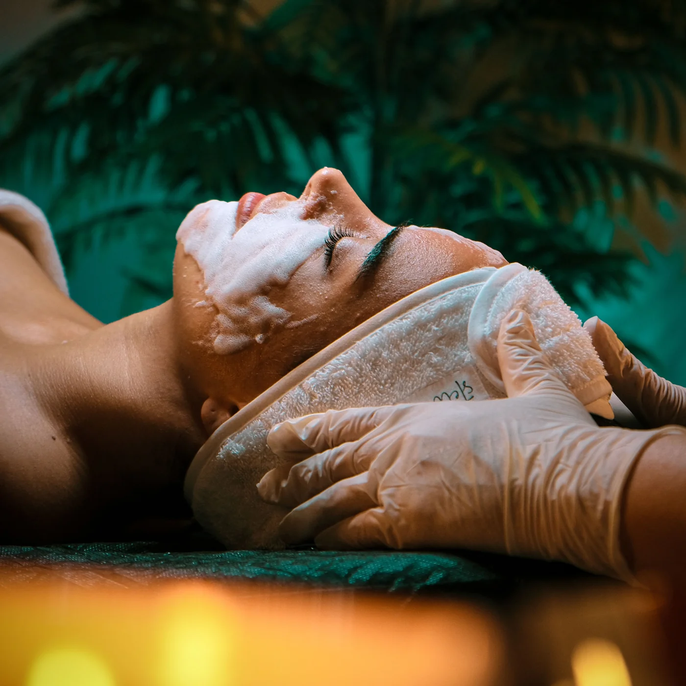

Vedd fel velem a kapcsolatot!
A bőröd meghálálja a törődést, és én segítek megtalálni a legjobb megoldást számodra. Ha kérdésed van a kezelésekről, tanácsra van szükséged, vagy időpontot foglalnál, keress bizalommal! Egy apró változtatás is nagy különbséget hozhat – kezdjük el együtt!

Szeretettel várlak a szalonban
1092 Budapest, Ráday u. 1.+36 20 344 9272hello.elizabeauty@gmail.comNyitvatartás
Hétfő–péntek: 9:00–16:00
Szombat–vasárnap: zárva
Kizárólag előre egyeztetett időpontban.

Gyakran ismételt kérdések
Időpont nélkül is érkezhetek?
Nem, a kozmetikámban kizárólag időpontra fogadok vendégeket.
Honnan tudjam, hogy melyik kezelés való nekem?
Az első találkozás alkalmával a kezelés előtt diagnosztizálom a bőrödet, és felvázolom a kezelési tervet.
Kapok segítséget az otthoni rutinomhoz?
Igen, természetesen! Az első alkalmat követően elmondom, hogy mire figyelj a mindennapokban, milyen termékeket használj, hogy a bőröd a lehető legjobb törődést kapja.
Hogyan tudok fizetni?
Bankkártyával és készpénzzel is fizethetsz a szalonban.